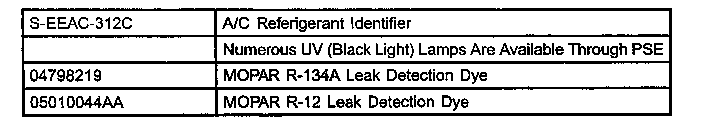

A/C - System Sealer Usage Prohibition
NUMBER: 24-003-03GROUP: Heating & A/C
DATE: May 23, 2003
SUBJECT:
A/C System Additives
MODELS:
1990 - 2004 All Chrysler Group Products
DISCUSSION
^ The use of A/C system sealers may result in damage to A/C refrigerant recovery/evacuation/recharging equipment and/or A/C system components.
^ Many federal, state/provincial and local regulations prohibit the recharge of A/C systems with known leaks.
^ Daimler/Chrysler recommends the detection of A/C system leaks through the use of approved leak detectors available through Pentastar Service Equipment (PSE) and fluorescent leak detection dyes available through MOPAR Parts.
^ Vehicles found with NC system sealers should be treated as contaminated and replacement of the entire A/C refrigerant system is recommend.
^ The only refrigerants authorized for use are R12 or R134A as specified per the vehicle application.
NOTE:
NO REFRIGERANT BLENDS OR HYDROCARBON-BASED REFRIGERANTS ARE TO BE USED.
^ Use only OEM specified compressor oil as specified per the vehicle application.
NOTE:
A/C SYSTEMS FOUND TO BE CONTAMINATED WITH A/C SYSTEM SEALERS, A/C STOP-LEAK PRODUCTS, SEAL CONDITIONERS, COMPRESSOR OIL OR REFRIGERANTS NOT APPROVED BY CHRYSLER VOIDS THE WARRANTY FOR THE A/C SYSTEM.

EQUIPMENT AVAILABLE:
NOTE:
PSE A/C REFRIGERANT RECOVERY EQUIPMENT FOUND TO BE CONTAMINATED WITH A/C SYSTEM SEALERS, A/C STOP-LEAK PRODUCTS, SEAL CONDITIONERS, COMPRESSOR OIL OR REFRIGERANTS NOT APPROVED BY CHRYSLER VOIDS THE WARRANTY FOR THE A/C REFRIGERANT RECOVERY EQUIPMENT.
POLICY:
Information Only